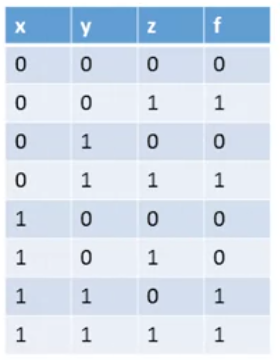
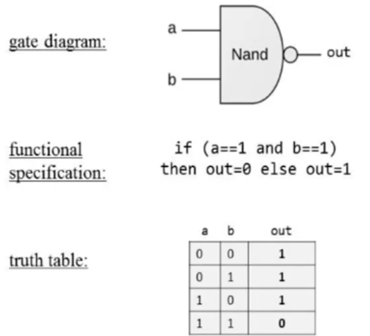

Module 1: Boolean Logic
1.1 Boolean Logic
0s, 1s.
(x AND y):
return 1 only if x and y are 1
Operation notation:
AND (∧): I'll use &
OR (∨): I'll use |
NOT (¬): I'll use ! , or Alt + 170
XOR (⊕): I'll use Xor
IMPLIES (→): Alt + 26
BICONDITIONAL (↔): Alt + 29 ↔
e.g.
Boolean expression
NOT(0 OR (1 AND 1) => Not (0 OR 1) => NOT(1) => 0
Boolean Functions:
f(x,y,z) => (x AND y) OR (NOT(x) AND z)

Boolean Identities:
Commutative laws (X AND Y = Y AND X)
x OR y = y OR x
Associative law: x & (y&z) = (x&y)&z
Distributive Laws: (x AND (y OR z)) = (x AND y) OR (x AND z)
De Morgan Laws: NOT(x AND y) = NOT(x) OR NOT(y)

Could also see if you recognize values from the truth table.
1.2 Boolean Functions Synthesis
If we want to get boolean expression from truth table.
Go row by row.
Start with just those with the value of 1
e.g.
!x & !y & !z = 1
Get the 3 expressions that result in 1:
(!x & !y & !z), (!x & y & !z), (x & !y & !z)
Now OR them together.
Any boolean function can be represented using AND and NOT expressions.
Also... NAND:
Basically it's !(x & y) a.k.a NOT(X AND Y)
Any boolean function can be represented using NAND expressions.
Proof: show you can do NOT and AND with NAND
NOT(x) = (x NAND x)
(x AND y) = NOT(x NAND y)
1.3 Logic Gates
Logic Gate is a stand alone chip, or simple chip
Elementary: Nand, Or, And, Not
Composite: One made of the elementaries and composites.
e.g. Mux, Adder, ...
NAND:

Make composite gate:
3 way AND gate -
Use two and gates:
Interface answers the question "What". Interface is unique - only one way to describe the what
Implementation: How done via seeing how chip constructed. How is variable, can do other implementations.
Circuit implementation:
AND vs OR done via series vs parallel circuitry.
1.4 Hardware Description Language
HDL -
Example file:
Build this chip from 'scratch' => have NAND, AND, OR, NOT
Want to implement (A AND NOT B) OR (NOT A AND B)
Explained: Can take any signal and get as many copies as you want.
Dispatching done simultaenously. => "Unlimited thin out"
Draw the connections between the gates, in red. We name each.
Implement in HDL:
/** Xor gate: out = (a And Not b) OR (Not(a) And b)
CHIP Xor {
In a, b;
OUT out;
PARTS:
Not (in=a, out=nota);
Not (in=b, out=notb);
And (a=a, b=notb, out = aAndNotb);
And (a=nota, b=b, out = notaAndb);
Or (a=aAndNotb, b=notaAndb, out=out);
}/** Xor gate: out = (a And Not b) OR (Not(a) And b)
CHIP Xor {
In a, b;
OUT out;
PARTS:
Not (in=a, out=nota);
Not (in=b, out=notb);
And (a=a, b=notb, out = aAndNotb);
And (a=nota, b=b, out = notaAndb);
Or (a=aAndNotb, b=notaAndb, out=out);
}HDL is a functional/declarative language.
This code will go into an interpreter and pipe values from the bottom to end.
Common HDLs: VHDL, Verilog, ... many more.
Class' HDL similar to other HDL. Minimal and simple.
1.5 Hardware Simulation
HDL code (.hdl), test script loaded into simulator.
Simulator goes through test script and subjects to specified tests.
Script based simulation.
=> With/without output and compare files
Can Enter values 0/1 into specific pins, inspect values of individual internal pins as well.
Test script: .tst
load Xor.hdl; set a 0, set b 0, eval; set a 0, set b 1, eval; set a 1, set b 0, eval; set a 1, set b 1, eval;
load Xor.hdl;
set a 0, set b 0, eval;
set a 0, set b 1, eval;
set a 1, set b 0, eval;
set a 1, set b 1, eval;Can also keep track of output:
load Xor.hdl; output-file Xor.out; output-list a b out; set a 0, set b 0, eval, output; set a 0, set b 1, eval, output; set a 1, set b 0, eval, output; set a 1, set b 1, eval, output;
load Xor.hdl;
output-file Xor.out;
output-list a b out;
set a 0, set b 0, eval, output;
set a 0, set b 1, eval, output;
set a 1, set b 0, eval, output;
set a 1, set b 1, eval, output;See an Xor.out file=> creates:
Can also use compare file: (.cmp)
Compare output with the respective line in compare file.
Throw comp error if not right.
Can write the chip logic in any high-level language... then run as output file.
People:
System architect - decide which chip needed. Each chip: architect create chip API, test script, compare file.
Developers - can go build the chip from this. Stub file (.hdl), test script (.tst), compare file (.cmp)
1.6 Multi-bit buses
Think as bunch of bits together.
Array of Bits => Sometimes called 'bus'
Add 2 16-bit integers => 16-bit adder.
Take two 16 bit ints, a and b. Output 16-bit out.
Reality 32 wires in, 16 out.
Similarly representing this in HDL:
CHIP Add3Way16 {
IN first[16], second[16], third[16];
OUT out[16];
PARTS:
Add16(a=first,n=second, out=temp);
Add16(a=temp,third,out=out);
}CHIP Add3Way16 {
IN first[16], second[16], third[16];
OUT out[16];
PARTS:
Add16(a=first,n=second, out=temp);
Add16(a=temp,third,out=out);
}Temp above lets us add 3 together. Manipulate the buses as entities this way.
Multi Way Chips: 4 bits and
Accessing bit after bit for each:
CHIP And4{
IN a[4];
OUT out;
}
PARTS:
AND(a=a[0], b=a[1], out=t01);
AND(a=t01, b=a[2], out=out[1]); ... etcCHIP And4{
IN a[4];
OUT out;
}
PARTS:
AND(a=a[0], b=a[1], out=t01);
AND(a=t01, b=a[2], out=out[1]); ... etcMulti Way chips.
Can break bus into sub buses:
Add16[0..7]=lsb, a[8..15]=msb, b=..., out =...
Above uses 2 vars as the two halves into the input of Add16.
Can split output too:
out[0..3]=t1,out[4..15]=t2
Can do overlap of subbuses.
Internal bus width deduced automatically. Can plus in a bunch of 0's or 1s via false or true.
1.7 Project 1 Overview
Develop 15 chips.
Given: Nand
Goal: Build Not, And, Or, Xor, Mux, Dmux, Not16, And16, Or16, Mux16, Or8Way, Mux4Way16, Mux8Way16, DMux4Way, DMux8Way
Multiplexor and Demultiplexor
Mux:
in a and b, sel input from 'bottom'.
If sel = 0, mux returns a. If sel = 1, mux returns b.
Can abbreviate truth table (based on sel). Select and output one of two inputs.
e.g. a programmable gate:
AndMuxOr (either AND or OR) based on sel.
A input fanned out to both And and Or gate.
DeMux:
Distribute output to a or b.
Example in communication network:
alternate to encode/decode 2 streams into a single output/input stream.
1.8 Perspectives
Built 15 elementary logic gates.
Take these to make more powerful chips.